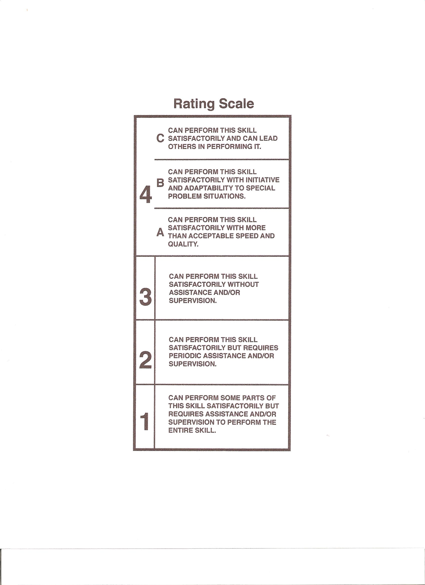

The Rating Scale
We gave considerable thought to a rating scale and, again, examined traditional marking schemes as well as innovative ones found in our search. We settled on the one developed by Adams as part of the DACUM model as described earlier. It is only in hindsight that I realize the significance of that decision.
The DACUM reflects the way we describe a person’s performance; the DACUM rating scale weaves together a set of performance statements based on such criteria as quality of work, quantity of work, initiative, adaptability, amount of supervision and assistance. The scale was linear. At the bottom was a “0” rating for a person who did not have sufficient skill to function in the workplace; the top rating was a “6” for a person who was able to lead others in practising the skill. It certainly is the most realistic performance rating scale that I’ve encountered
As we began to use the scale, however, we concluded that a completely linear scale did not reflect our understanding of performance in the workplace; initial ratings are linear but higher level ratings are not. The college adopted levels “0” to “4” as defined by Adams but replaced levels “4 to 6” with a “4A, 4B and 4C. Under this format, a learner could obtain any or all of the 4 levels. Later, in an attempt to establish common performance based rating system for Atlantic Canada, the “0” was dropped as well. I am not sure, in hindsight, that we should have done this.
The first three levels are linear, that is the person progresses from level 1 through 2 to 3. Performance at the 4 level is not linear, that is a person may obtain a level 4a, 4b or 4c or any combination thereof.

With any rating scale, a benchmark is necessary and the benchmark should reflect the field in which the rating is practiced. For a plumber, for example, a rating of three would represent a plumber who comes to your home, fixes any normal plumbing problem without having to phone back to the office for advice. Other ratings are applied based on the benchmark.
How, you ask, does one take into account the information or knowledge intrinsic to the performance of a task? The acquisition of knowledge in an occupation should increase one’s level of performance (or else why is it important?). Knowledge, itself, is neither a criteria or a level, although it may be a factor in reaching an acceptable level. Knowledge must be factored in ― it should not be ignored but it is not a performance criteria.
Rating scales and benchmarks are seldom, if ever, absolute; they are contextual and that context is income-generating employment. Performance at a task cannot be scientifically measured but it can be rated. An Instructor/Learning Manager is a mediator in the rating process ― interpreting the achievements of a learner in the context of the occupation. This is an added reason for requiring instructors to have relevant and recent work experience. At the same time, an instructor interprets the circumstances of the occupation to the learner. Further comment on the assessment process can be found elsewhere in this book.